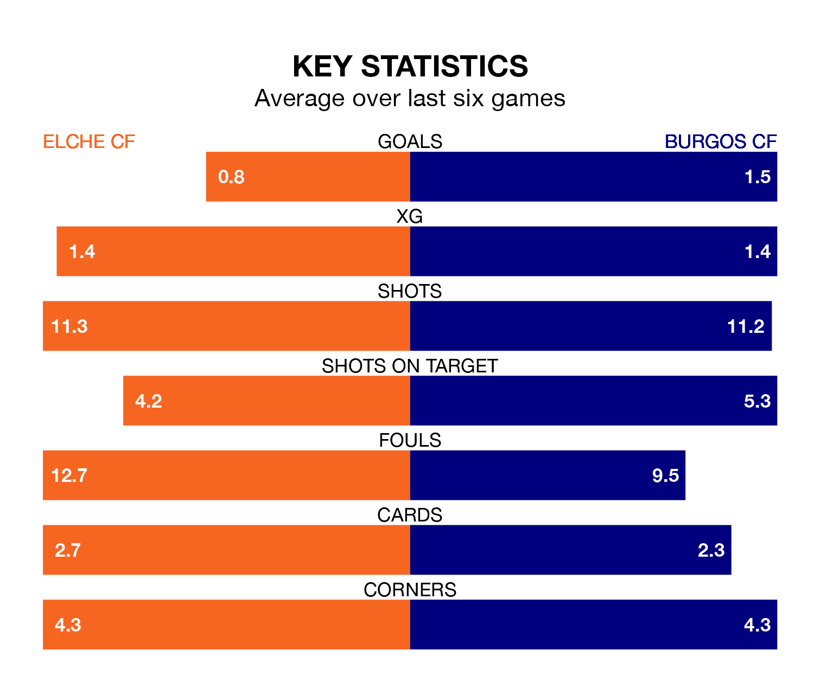

Burgos CF travel to Elche CF on late Friday in the Segunda División.
The visitors come into the game on the back of a win in their last match, having beaten Albacete Balompié 2-1 at home, with goals from Curro Sánchez and Fer Niño.
Elche also won their last match, 1-0 against FC Andorra, with their goal scored by Nicolás Castro.
With 23 goals in 24 games so far this season, Elche are scoring at below the league average rate with 1.0 goals per game. But they are conceding fewer than average too, letting in 22 goals at a rate of 0.9 per game.
Burgos, meanwhile, are above average scorers, with 1.3 goals per game, compared to a league average of 1.2. They have conceded 1.2 goals per game.
In Sánchez Rodríguez, the away side have one of the league's sharpest shooters so far this season. He has notched 10 goals in 24 appearances, to sit third in the scoring charts.
His goal rate of one every 206 minutes is slightly quicker than that of Óscar Plano, the hosts' top scorer with a goal every 157 minutes, and a total of seven goals in 21 games.
Elche are ninth in the table after 24 games, of which they have won 10 and drawn seven, earning 37 points.
Burgos are one place behind Elche in 10th, with 10 wins and six draws putting them on 36 points.
The home team are in mixed form in the Segunda División, with two wins and two draws from their last six games.
With three wins and two draws over that period, Burgos's form is better – they have taken 11 points from 18, compared to Elche's eight.
Updated: 10:03 (UTC), 30/01/24